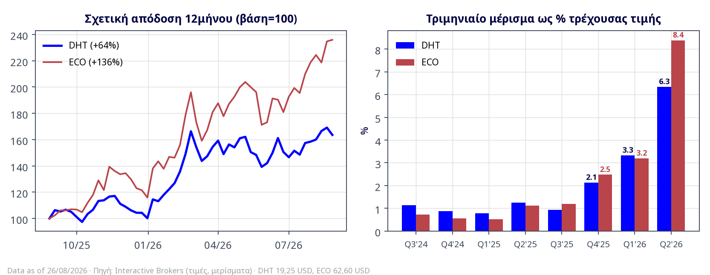

Πίνακας 1 — Βασική σύγκριση (26/08/2026)
| Μέγεθος | DHT | ECO (Okeanis) | Πλεονέκτημα |
|---|---|---|---|
| Τιμή / Κεφαλαιοποίηση IBKR | $19,25 / $3,10 δισ. | $62,60 / ~$2,44 δισ. | — |
| Στόλος | 23 VLCC, μ.ο. ~9 έτη | 8 VLCC + 10 Suezmax, μ.ο. 5,6 έτη | ECO (νεότητα/eco) — DHT (ομοιογένεια/κλίμακα VLCC) |
| Q2 2026 καθαρά κέρδη 6-K | $198,3 εκ. ($1,23/μτχ) | $230,3 εκ. ($5,90/μτχ) | ECO — με 5 λιγότερα πλοία |
| Q2 TCE στόλου / spot VLCC | $126,7k / $162,6k | $181,2k / $213,6k | ECO (+43% / +31%) |
| Μέρισμα Q2 (% τρέχουσας τιμής) | $1,22 (6,3%) | $5,25 (8,4%) | ECO |
| Trailing 4Q DPS / απόδοση IBKR | $2,45 / 12,7% | $9,55 / 15,3% | ECO |
| P/E σε H1'26 annualized C. | 4,3× | 3,8× | ECO |
| Καθαρός δανεισμός / ανά πλοίο | $273 εκ. / $11,9 εκ. | $474 εκ. / $26,3 εκ. | DHT |
| Μόχλευση (αγοραίες αξίες) | 14,1% | net LTV <25% (book 35%) | DHT |
| Net Debt / EBITDA (Q2 annualized) C. | 0,30× | 0,47× | DHT |
| ROE (Q2 annualized, ενδεικτ.) C. | ~44% | ~65–70% | ECO (μόχλευση + TCE) |
| Q3 2026 bookings | 58% spot @ $152,7k· 79% συνόλου @ $104,4k | VLCC 48% @ ~$207k· Szmx 42% @ $133k· ~52% ημερών ανοιχτό | ECO σε τιμή — DHT σε κάλυψη |
| Απόδοση 12μήνου (τιμή) | +66% | +136% | ECO |
| Μεταβλητότητα HV30 / IV | 40,5% / 40,6% | 47,3% / 47,1% | DHT (χαμηλό beta) |
| Ρευστότητα μετοχής (90ημ μ.ο.) | $64 εκ./ημέρα | $31,7 εκ./ημέρα | DHT |
| Μετοχική βάση | Θεσμικοί ~70%, πλήρες free float | Οικογένεια Αλαφούζου ~46% (Ι. Αλαφούζος 29,5%) | DHT (float) — ECO (alignment) |
| Κάλυψη αναλυτών WEB | 6 αναλυτές, PT ~$19,3–20,5 | ~2 αναλυτές, PT ~$52,5 (κάτω από την τιμή) | DHT (βάθος κάλυψης) |
Πηγές: IBKR (26/08/2026)· δελτία Q2 2026 DHT (05/08) & Okeanis (04/08, 6-K/GlobeNewswire)· earnings call ECO 11/08· stockanalysis/MarketScreener. Οι υπολογισμοί C. ενδεικτικοί. Το κλείσιμο ECO 25/8 ήταν $65,04· χρησιμοποιείται η ενδοσυνεδριακή $62,60 της 26/8 — και οι δύο τιμές είναι μετά το ex-dividend $5,25 (14/08).
Διάγραμμα 1 — Απόδοση & μερισματική ροή σε κοινή βάση

Πηγή: IBKR. Αριστερά: η ECO υπεραπέδωσε ×2 στο 12μηνο. Δεξιά: σχεδόν ταυτόσημη μερισματική τροχιά μέχρι το Q1 2026 — η απόκλιση του Q2 (8,4% έναντι 6,3% σε ένα τρίμηνο) είναι το αποτύπωμα της διαφορετικής εμπορικής στρατηγικής.
DHT — το πειθαρχημένο franchise. Αμιγής VLCC στόλος 23 πλοίων, ~50% χρονοναυλωμένος, μόχλευση 14,1%, κανόνας διανομής 100% του «ordinary net income», συνειδητή αποχή από τον Persian Gulf στο Q2 για λόγους ασφαλείας. Παράγει το χαμηλότερου κινδύνου cash flow του κλάδου — και το πληρώνει με χαμηλότερο TCE και το μισό ράλι των peers.
Okeanis — η μηχανή μέγιστης απόδοσης. Ο νεότερος στόλος της αγοράς (μ.ο. 5,6 έτη, 100% eco/scrubber), σχεδόν 100% spot, διπλή έκθεση VLCC + Suezmax, in-house εμπορική πλατφόρμα με επιθετικό risk appetite (συμπεριλαμβανομένων war-premium φορτίων), υψηλότερη μόχλευση που συμπιέζεται ταχύτατα (net LTV <25%, μέσο περιθώριο χρέους 1,47%). Στο Q2 2026 πέτυχε spot VLCC $213.600/ημέρα — $51.000/ημέρα πάνω από την DHT — και έβγαλε περισσότερα καθαρά κέρδη με μικρότερο στόλο. Οικογενειακός έλεγχος Αλαφούζου ~46% με ό,τι αυτό συνεπάγεται (alignment αλλά και related-party δομές διαχείρισης, ρηχή κάλυψη, μικρότερο float).
Η DHT μπαίνει στο Q3 με 79% του συνόλου των ημερών κλειδωμένο ($104,4k blended) — έχει ήδη «πουλήσει» το τρίμηνο. Η Okeanis κρατά ~52% των ημερών ανοιχτό, με τα κλεισμένα VLCC στα ~$207k/ημέρα. Αν η κρίση του Ορμούζ συνεχιστεί, η ECO θα τυπώσει άλλο ένα ασύγκριτο τρίμηνο· αν έρθει ειρήνευση μέσα στο τρίμηνο, η DHT έχει το μαξιλάρι και η ECO την πτώση. Αυτό δεν είναι λεπτομέρεια — είναι η πιο καθαρή αποτύπωση των δύο φιλοσοφιών.
Πηγή: Δελτία Q2 2026 αμφοτέρων (04–05/08/2026) 6-K.
Η DHT διανέμει με κανόνα (100% ordinary net income — 66 συνεχόμενα τρίμηνα)· η Okeanis με απόφαση ΔΣ ανά τρίμηνο (17 συνεχόμενα τρίμηνα, Q2: $5,25 = ~89% του EPS, ιστορικά το payout κυμαίνεται). Πρακτική συνέπεια: το μέρισμα της DHT είναι προβλέψιμη συνάρτηση της ναυλαγοράς· της Okeanis εξαρτάται και από τις κεφαλαιακές προτεραιότητες της οικογένειας (το 2026 απορρόφησε και δύο εξαγορές Suezmax — Nissos Tigani & Nissos Vous — με ταυτόχρονο μέρισμα-ρεκόρ, ένδειξη αυτοπεποίθησης αλλά και υπενθύμιση ότι το capital allocation περνά από έναν βασικό μέτοχο).
Πίνακας 2 — Χρηματοοικονομική θωράκιση
| Παράμετρος | DHT | ECO | Σχόλιο |
|---|---|---|---|
| Χρέος / Ταμείο (30/06) | $434,8 εκ. / $161,7 εκ. | $722 εκ. / $248 εκ.* | *εκ των οποίων ~$35 εκ. δεσμευμένα για Nissos Vous |
| Καθαρός δανεισμός ανά πλοίο | $11,9 εκ. | $26,3 εκ. | Η DHT ουσιαστικά αχρεωμένη σε όρους κλάδου |
| Μόχλευση σε αγοραίες αξίες | 14,1% | <25% net LTV | Και οι δύο συντηρητικές· η ECO από ~40%+ προ διετίας — ταχεία απομόχλευση |
| Κόστος χρέους | SOFR + 1,32–1,35% | μέσο περιθώριο 1,47% | Και οι δύο σε επίπεδα «ναυτιλιακού investment grade» |
| Κάλυψη έναντι ύφεσης | Cash breakeven $22,6k + 50% T/C book | ~100% spot, ελάχιστη T/C κάλυψη | Σε κατάρρευση rates η DHT συνεχίζει να πληρώνει μέρισμα· η ECO όχι απαραίτητα |
| Ευαισθησία EPS σε ±$10k/ημέρα spot (έτος) C. | ±$0,25 (±1,3% της τιμής) | ±$1,45 (±2,3% της τιμής) | ECO ≈ ×1,8 μεγαλύτερο operating leverage ανά μονάδα τιμής |
Πηγές: δελτία Q2 2026, earnings calls 6-K WEB. Ευαισθησία ECO: ~5.700 spot ημέρες/έτος ÷ 39,04 εκ. μτχ (εκτίμηση C.).
Πίνακας 3 — Συγκριτική αποτίμηση (ενδεικτική)
| Δείκτης | DHT | ECO | Ανάγνωση |
|---|---|---|---|
| P/E trailing (reported) | 6,6× | ~5,8×** | Και τα δύο οπτικά φθηνά — σε peak κέρδη |
| P/E σε H1'26 annualized | 4,3× | 3,8× | ECO φθηνότερη στο τρέχον καθεστώς |
| Μερισματική απόδοση trailing | 12,7% | 15,3% | ECO — αλλά με διακριτικό payout |
| P/NAV (εκτίμηση C., ενδεικτικά) | ~1,13–1,28× | ~1,2–1,45× | Αμφότερα premium στον «χάλυβα»· ECO ακριβότερη σε assets, φθηνότερη σε earnings |
| EV/EBITDA (Q2 annualized) C. | 3,7× | 2,9× | ECO — το operating leverage δουλεύει υπέρ της όσο κρατά ο κύκλος |
| Consensus PT vs τιμή | ~ στο μηδέν | PT 16% ΚΑΤΩ από τιμή | Στην ECO η αγορά τρέχει μπροστά από τη (ρηχή) κάλυψη |
**ECO trailing EPS προσεγγιστικό (Q3–Q4'25 από μερίσματα/ιστορικό payout). NAV ECO: 8 eco-VLCC ~$135–150 εκ. + 10 eco-Suezmax ~$100–115 εκ. − καθαρό χρέος· τα Suezmax marks μη επαληθευμένα — αυξημένη αβεβαιότητα. C.
Πίνακας 4 — E1 Scorecard σύγκρισης (βάρη κανονικοποιημένα στο 100)
| Διάσταση | Βάρος | DHT | ECO | Edge |
|---|---|---|---|---|
| Εταιρία & επιχειρηματικό μοντέλο | 14% | 70 | 75 | ECO — νεότερος στόλος, κορυφαία εμπορική εκτέλεση |
| Οικονομικές καταστάσεις | 18% | 75 | 70 | DHT — ισολογισμός-φρούριο, χαμηλότερο χρέος/πλοίο |
| Αριθμοδείκτες | 9% | 75 | 75 | Ισοπαλία — ECO καλύτερα περιθώρια/ROE, DHT καθαρότερη δομή |
| Κλάδος & συνθήκες | 9% | 60 | 60 | Κοινή έκθεση στον ίδιο κύκλο |
| Κίνδυνοι (διαχείριση/έκθεση) | 9% | 60 | 50 | DHT — war-risk αποχή, T/C κάλυψη, χαμηλό beta |
| Δυναμικό ανάπτυξης | 9% | 55 | 65 | ECO — στόλος 14→18 το 2026, μηδενικό replacement capex |
| Διοίκηση & διακυβέρνηση | 9% | 70 | 60 | DHT — η ECO εκτελεί άψογα, αλλά family control 46%, related-party δομές, ρηχό float |
| Αποτίμηση | 14% | 55 | 50 | DHT οριακά — χαμηλότερο P/NAV· στην ECO η τιμή έχει ξεπεράσει την κάλυψη |
| Τεχνική εικόνα | 4,5% | 70 | 75 | ECO — ισχυρότερο momentum, νέα υψηλά μετά το ex-div $5,25 |
| Ειδήσεις & εξελίξεις | 4,5% | 65 | 70 | ECO — ρεκόρ + επέκταση στόλου |
| ΣΥΝΟΛΟ | 100% | 66,0 | 64,5 | Οριακό προβάδισμα DHT — πρακτικά ισοπαλία δύο διαφορετικών ζώων |
Μεθοδολογία Merit equity-analyst E1/E7 — συντηρητική βαθμολόγηση, ίδια βάρη με το DHT Deep-Dive 26/08/2026.
Η DHT κερδίζει σε: (1) προστασία καθόδου — cash breakeven $22,6k, 50% T/C, μόχλευση 14,1%: το μέρισμα επιβιώνει σχεδόν κάθε σεναρίου· (2) προβλεψιμότητα — rule-based payout 66 τριμήνων· (3) ρευστότητα & κάλυψη — $64 εκ./ημέρα, 6 αναλυτές, πλήρες float· (4) ποιότητα κερδών — TCE χωρίς war-premium tail risk.
Η Okeanis κερδίζει σε: (1) μηχανή κερδών — $230 εκ. σε ένα τρίμηνο με 18 πλοία, ο υψηλότερος TCE του κλάδου παγκοσμίως· (2) στόλο — 5,6 έτη μ.ο., 100% eco/scrubber, καμία ανάγκη capex για δεκαετία· (3) beta στον κύκλο — αν το Ορμούζ μείνει κλειστό, το Q3 της θα κάνει το Q2 να μοιάζει προθέρμανση (~52% ημερών ανοιχτό σε αγορά $200k+)· (4) φθηνότερη σε τρέχοντα earnings power (3,8× vs 4,3×).
Πίνακας 5 — Ποιο χαρτί για ποιον
| Προφίλ | Προτίμηση | Σκεπτικό |
|---|---|---|
| Εισοδηματίας (συντηρητικός) | DHT | Κανόνας διανομής, επιβίωση μερίσματος σε ύφεση, χαμηλό beta |
| Εισοδηματίας (επιθετικός) | ECO | 15,3% trailing και πιθανό Q3 άνω του $5/μτχ αν κρατήσει η αγορά |
| Cycle bull / growth | ECO | Μέγιστο operating leverage στη συνέχιση της κρίσης, νεότερος στόλος |
| Value / margin of safety | DHT | Χαμηλότερο P/NAV, buyback ιστορικό κάτω από NAV, καθαρότερο downside |
| Risk-averse | DHT | Σε «peace shock» η ECO θα υποχωρήσει σημαντικά περισσότερο (υψηλότερο beta, 52% ανοιχτές ημέρες, ρηχότερο βιβλίο) |
| Momentum trader | ECO | Νέα υψηλά μετά από ex-div $5,25 — σπάνια ένδειξη ζήτησης |
| Χαρτοφυλάκιο (πρόταση C.) | Barbell | Πυρήνας DHT + δορυφόρος ECO (π.χ. 70/30) — το ζεύγος καλύπτει και τα δύο σενάρια διάρκειας της κρίσης με ελεγχόμενο συνολικό beta |
Πηγές & όρια
IBKR (τιμές, μερίσματα, μεταβλητότητα — VERIFIED)· Okeanis Q2 2026 Unaudited Condensed Financial Statements (GlobeNewswire 04/08/2026, SEC 6-K acc. 000110465926090429) και earnings call 11/08/2026 μέσω Yahoo/Fool/Investing extracts· DHT Q2 2026 6-K (05/08/2026)· stockanalysis/MarketScreener (consensus — ρηχή κάλυψη ECO)· εκτιμήσεις C. όπου σημειώνεται. Εκκρεμείς επαληθεύσεις: ECO trailing EPS Q3–Q4 2025, Suezmax asset marks, ταυτότητα σχέσεων διαχείρισης (related-party) από το 20-F της Okeanis. ⚠️ Πριν από οποιαδήποτε συναλλαγή, επιβεβαίωσε τα τρέχοντα μεγέθη σε αξιόπιστο τερματικό αγοράς.
Η ανάλυση αυτή έχει αποκλειστικά ενημερωτικό χαρακτήρα και δεν αποτελεί επενδυτική σύσταση κατά την έννοια του Ν. 4514/2018 (MiFID II) ούτε προτροπή για κατάρτιση συναλλαγών. Οι επενδύσεις σε κινητές αξίες ενέχουν κίνδυνο απώλειας κεφαλαίου. Οι εκτιμήσεις που σημειώνονται ως «εκτίμηση C.» είναι ενδεικτικοί υπολογισμοί βάσει δηλωμένων παραδοχών. Merit Securities SA — Μέλος του Χρηματιστηρίου Αθηνών, εποπτευόμενη από την Επιτροπή Κεφαλαιαγοράς.